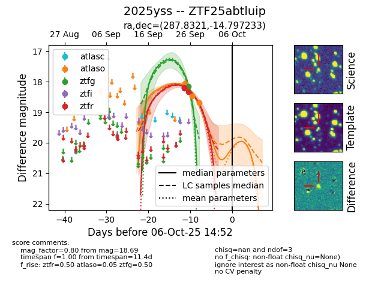

FINK: ZTF25abtluip
Lasair: ZTF25abtluip
ALeRCE: ZTF25abtluip
TNS: 2025yss
YSE: 2025yss
ZTF25abtluip (ztf,fink)
2025yss (tns,yse)
equatorial (ra, dec) = (287.8321,-14.79723)
galactic (l, b) = (21.8252,-11.01367)

last atlaso=18.69, ztfg=18.16, ztfr=18.33
4 atlaso, 1 ztfg, 3 ztfr detections